Proof of concept — This is a draft internal wiki for review by Sales, CSM, Support, QA, and Stakeholders. Content is sourced from Pinnacle_UI_Facts.md, the project knowledge base, and the Pinnacle Series tutorial library. Send feedback to Nick before this is published more broadly.
Pinnacle Series Wiki
The Pinnacle Series Wiki is the single source of truth for how Eagle Point's Applied Learning platform actually behaves in customer tenants — what lives where, who can do what, and the small details that trip people up. Whether you're a new hire learning the product, a CSM prepping for a renewal, a Support engineer tracing a permission edge case, a Sales rep validating a feature claim, a Marketer building a campaign, or a Stakeholder reviewing the roadmap, this is where you confirm what's real before it goes into a deck, a ticket, or a customer call. Sourced from the canonical Pinnacle_UI_Facts.md knowledge base, the official Pinnacle Series tutorial library, and field experience captured by the team — kept current as the product evolves.
Welcome / Overview
Pinnacle Series is Eagle Point Software's learning and productivity platform. It combines a structured library of curated learning content with on-demand search, AI chat, and personalized skill development tools. It's used by AEC and manufacturing organizations to onboard new hires, support continuing education, and answer in-the-moment "how do I do this?" questions.
Whatever your role at Eagle Point — Sales, CSM, Support, QA, Marketing, Product, Engineering, Design, Content, Implementation, Operations, People Ops, Leadership, Stakeholders, or anyone else keeping the lights on — your work shows up downstream as a designer who figured out the workflow they were stuck on, a project that didn't get rejected because someone caught the error in time, a contractor who shipped on a tight deadline because their team was actually ready. Customers describe Pinnacle Series as their “single source of truth” — where they turn when they need an answer, a standard, or a workflow. Every organisation that adopts it well gets a workforce that builds the world a little better. More on what makes that work →
Three ways users find what they need
Global Search. A keyword or phrase typed into the top-right search bar returns videos, guides, workflows, and documents — filtered to what the user has access to.
Library Browsing. Structured content organized by discipline, product, or job function. Good for discovering new topics or working through a learning path.
AI Chat. Natural-language Q&A backed by Pinnacle's content. Pulls only from content the user is authorized to see. More on AI Chat →
Two experiences: Peak and Classic
Pinnacle Series ships in two UIs — Peak Experience (the modern UI, default for new tenants) and Classic (the legacy UI, still in use at some tenants mid-migration). All new feature work targets Peak. More on Peak vs Classic →
Who uses this wiki: Sales, CSM, Support, QA, Stakeholders, and new hires. The goal is a single trustworthy reference for "what does this do, and what permissions does it need." If you find something wrong or missing, flag it to Nick.
What makes Pinnacle Series different
eLearning delivers content. An LMS manages it. Applied Learning makes it matter.
Most learning tools fall into one of two categories. Pinnacle Series sits in a third one — Applied Learning — which is what makes it work for AECO and manufacturing teams the way generic platforms can't.
Tier 1
eLearning
Delivers content
LinkedIn Learning · Udemy · Coursera
Tier 2
LMS
Manages learning
Docebo · Cornerstone · SAP · Absorb
Tier 3 · Pinnacle Series
Applied Learning
Makes it matter
Content + LMS + In-Autodesk + Assessments + AI
Pinnacle Series at scale
750K+
Users
2,700+
Customers
95%
Renewal Rate
30,000+
Expert Videos
130+
Languages
AEC + MFG
Built for the Industry
Why customers buy — the rule of 3
1
Reduce rework
In-tool guidance and targeted learning prevent errors before they become billable rework.
2
Accelerate adoption
Assessment-to-path targeting eliminates wasted training time — only close real gaps.
3
Prove ROI
Capability reporting and closed-loop reassessment show measurable improvement over time.
The full applied-learning system: Skills assessment (KnowledgeSmart) · In-workflow guidance (Command Launcher + Related Learning inside Autodesk) · Single knowledge source (company standards searchable, governed) · Personalised paths (only relevant training assigned) · AI-assisted discovery (SPARK in Teams) · Reporting and reassessment (utilisation, capability heatmaps, closed-loop).
Customers building the world
The customers using Pinnacle Series aren't designing learning content for its own sake — they're using it to upskill the teams who design and build the bridges, transit systems, hospitals, casinos, lunar facilities, climate-resilience infrastructure, and research stations that make the modern world possible. Below are seven projects where Eagle Point's customers are doing exactly that. Each card links to the full Customer Project Highlight (internal use only).
Internal use only. The linked PDFs are sales/CSM enablement assets and shouldn't be shared externally. They live alongside this wiki in customer-highlights/ for easy reference during pre-call prep.
Eagle Point Software
If we stay focused on our VISION and if we continue to PUSH when others would quit, then in the end WE WILL SUCCEED!
Our motto
Peak Experience vs Classic
Peak Experience is the redesigned Pinnacle Series UI. Classic is the older interface that some tenants are still on while they migrate. The two experiences are controlled by tenant-level toggles — and importantly, those toggles are split for admin and end-user UIs.
The two Peak Experience toggles
Peak Experience is controlled by two independent tenant-level toggles at Administration Portal → Settings → General → Peak Experience:
Toggle
Controls
Peak Experience Configuration
Enables Peak for the Administration Portal (admin-side UI).
Peak Experience for End Users
Enables Peak for the Home page / end-user experience.
The two are intentionally independent so a tenant can configure Peak in the admin portal first — at their own pace — before flipping the end-user experience.
Why move to Peak
Modern UI. Streamlined nav, bulk modification tools, enhanced search.
Library-based content management. Libraries, Topics, and Subtopics replace the old folder-based structure.
Library-driven permissions. Access is now controlled at the library level rather than per-folder, with less manual effort.
Centralized assignments. Both skills assessments and learning tasks managed in one place; strong visual markers for due dates and progress.
Future-proofed. Peak is the foundation for AI-driven assistance, smarter reporting, and continuous feature development.
What's not yet in Peak
Live Events — not yet available.
Workgroups — still in development. Note the related Work Group Management permissions exist but apply only to Classic.
Document conversion for search & translation — converting external docs into Pinnacle Documents for enhanced searchability and translation isn't yet supported.
The Pinnacle Series sign-in page is email-first. The flow is:
Page opens with the Email field, a Set Your Language selector (default: English), and a green Continue button.
User enters their email and clicks Continue.
The page updates: if the user signs in with a password, a Password field, Remember this device checkbox, and Forgot password? link appear. User enters password and clicks Sign In.
User lands on Home.
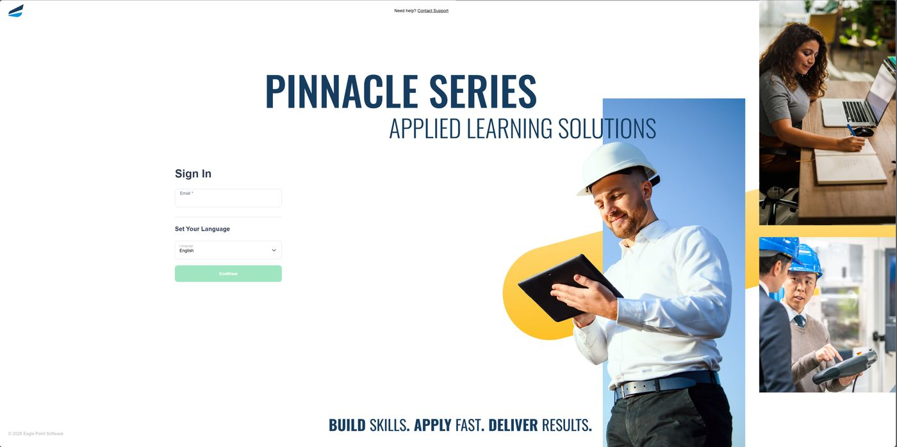
Sign-in page (step 1) — Email field, Set Your Language selector, and green Continue button. The hero shows the "Pinnacle Series — Applied Learning Solutions" branding.
Default-tenant caching. The browser may cache a default tenant in local storage from a previous session. A user signing in for the first time on a device may see different behavior than a returning user. Clearing local storage / using a private window resets this.
Single Sign-On (SSO)
SSO is tenant-scoped and user-scoped — both have to line up for a user to be routed through SSO instead of password sign-in.
Tenant prerequisite: SSO integration must be configured for the tenant via Admin Portal → Security & Authentication.
Per-user override: Each user has an "Exclude User from SSO" toggle (Admin Portal → Users → Edit User Details → User Settings). When ON, that user signs in with a password even if their tenant has SSO.
When an SSO-eligible user enters their email and clicks Continue:
The Password field is not shown.
If the user already has a valid IdP session, they're taken directly into Pinnacle Series.
Otherwise, they're redirected to the Identity Provider to authenticate, then returned to Pinnacle Series.
Naviate (custom SSO for a specific customer)
Naviate is NOT a typo. Naviate is a named customer (a Symetri subsidiary) for whom we built a custom SSO integration. Naviate users authenticate via My.Symetri.com, not the Pinnacle password field.
URLs that include a NaviateID=<email> query parameter route the user through the Naviate SSO flow.
If the user is logged into My.Symetri.com, Pinnacle authenticates the user via Naviate. If no Pinnacle account exists, one is created on the fly with a Terms & Conditions modal before landing.
If not logged into My.Symetri.com, the user is sent to the Naviate sign-in page first.
If the user has no valid Naviate account, no Pinnacle account is created and the user is not signed in.
URLs without NaviateID follow the standard Pinnacle sign-in flow.
Naviate integration is production-only — test environments may have limited coverage.
SSO configuration permission: Configuring SSO for a tenant requires the Administrator permission (under User Administration). Configuring an individual user's "Exclude from SSO" toggle requires the same permission.
Glossary
Common Pinnacle Series terms, grouped by audience.
For end users
Term
Meaning
Global Search
The universal search bar at the top-right of the platform. Searches across all content the user has access to.
Library Search Bar
A search bar specific to the current library (top-left of the library page).
Filter Panel
Left-side panel on search results allowing filtering by Publisher, Topic, Sub-topic, Content type, Duration, Difficulty.
Library
A collection of related content grouped together (typically by discipline, product, or job function). Users only see libraries shared with them.
Featured Library
A library flagged as featured by an admin. Featured libraries appear in their own section on the Home page above the regular Libraries section.
Topic / Subtopic
Categorization metadata applied to content. Used for filtering and discovery.
Learning Path
A structured sequence of courses or modules, often with a difficulty level and enrollment status.
Assignment
Learning content (course, learning path, or assessment) assigned to a user with a due date.
Enrollment History
The user's full record of completed, in-progress, and dropped courses.
Bookmark
A saved reference to a piece of content for quick access later.
SPARK
Personalized "nano-learning" feed of short videos curated by AI from the user's interests, group interests, and shared libraries. More →
AI Chat
Pinnacle's natural-language chat assistant. More →
Pinnacle User Tools
An optional desktop add-on that surfaces Pinnacle content inside Autodesk products via Related Learning Commands.
Re-Enroll
Register again for content the user previously completed or dropped.
For users with elevated permissions
Term
Meaning
Tenant
A customer's instance of Pinnacle Series. Tenant-level settings (like Peak toggles, SSO config, branding) apply to all users in that tenant.
Subscription Library
A library of content provided by Eagle Point as part of the customer's subscription. Visible to all users by default unless the admin restricts visibility.
Custom Library
A library created by the customer's Content Administrator using their own content.
Copy from Subscription
An action that duplicates content from a subscription library into the customer's own library, allowing them to modify it.
Find and replace text globally across content items in libraries the admin manages.
Recycle Bin
Temporary storage for deleted content. Reachable from Content → Tools Menu → Recycle Bin.
Learning Tag
A tag applied to content that maps it to specific skills or assessment outcomes.
Related Learning Command
A tag that associates content with an Autodesk command (e.g., AutoCAD HATCH) so it appears via the Pinnacle Series Related Learning plugin inside the host application.
Auto-Assignment
A rule that automatically assigns content or assessments to users based on group membership, skill gaps, or thresholds.
Training Threshold
The score boundary used to decide whether a user needs full, partial, or no training based on assessment results (e.g., below 30% gets full path, above 80% skips training).
External User
A user account for someone outside the customer's organization (vendors, contractors, project partners). Has limited access scoped to the libraries shared with them. More →
External Learning
Training the user completed outside Pinnacle Series, tracked inside the platform for credit.
Group Owner
A user designated as the owner of a group. Can manage membership and (in future releases) assign content directly to group members.
Inherit Permissions
Toggle on a user account: when ON, the user inherits all permissions granted to groups they belong to.
KnowledgeSmart (KS)
Eagle Point's skill assessment product, integrated with Pinnacle Series. Assessment results can drive personalized learning paths.
Home Page (End User)
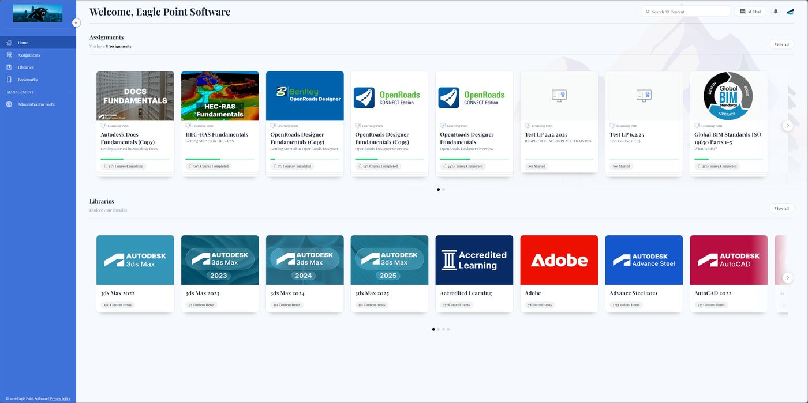
End-user Home page — left nav (Home, Assignments, Libraries, Bookmarks, MANAGEMENT), top bar with Search All Content / AI Chat / notification bell / avatar, and the Assignments + Libraries carousels.
Where
Default landing page after sign-in.
Left navigation
The end-user left nav, in order:
Home
Assignments
Libraries
Bookmarks
SPARK — only if the user belongs to a group with SPARK enabled.
AI Chat
MANAGEMENT section (containing Administration Portal) — only if the user has any admin-tier permission.
MANAGEMENT section behavior. The MANAGEMENT section is rendered only for users whose permissions grant access to the Administration Portal. It is expanded by default on every fresh Home page load (the user can collapse it, but it re-expands next time). End users without any Admin-Portal-granting permission see no placeholder — the section is simply absent.
Page body
The Home page body shows:
Assignments section — the user's currently assigned content.
SPARK section (if SPARK is enabled for the user's group) — header reads "SPARK — AI-powered learning bursts" with an "Up Next" panel and a playlist of short video cards.
Featured Libraries — appears only if at least one library is flagged as Featured in Admin Portal → Libraries. Absent entirely otherwise.
Libraries — always present. The non-featured carousel of all libraries shared with the user.
Top bar
Global Search (top-right).
User avatar (top-right) → menu opens with Profile & Settings, Switch Tenant, Sign Out.
Assignments (End User)
Where
Home page → left nav → Assignments
The end-user Assignments page shows the user's currently assigned learning content with strong visual markers for due dates, progress, and completion status.
What's there
Currently Assigned. Active assignments, sortable by due date.
Enrollment History. All completed, in-progress, and dropped courses.
Per-row kebab menu with quick actions: View details, Re-Enroll, View Certificate, Drop (where allowed).
Common end-user actions
Self-enroll. User can browse libraries and enroll themselves in a course or learning path without admin involvement.
Re-Enroll. Take a course again — useful after content updates or for re-certification.
View Certificate. Available for completed enrollments.
Pause Learning. Stop progress temporarily and resume later.
Required permissions: None. Every user has access to their own Assignments page.
Libraries (End User)
Where
Home page → left nav → Libraries
The Libraries page shows all libraries the user has been granted access to. Users only see libraries that an admin has shared with them, their group, or all users.
Library views
Library cards grouped by visibility (Featured, Subscription, Custom).
Per-library: Topics button to jump to a topic-filtered view.
Library Search Bar (top-left of a library page) for search scoped to that library.
Inside a library
Filter panel with Publisher, Topic, Sub-topic, Content Type, Duration, Difficulty.
Content cards for videos, documents, workflows, courses, learning paths, and quizzes.
Required permissions: None. Library access is controlled by the admin via library sharing — once shared, no special permission is needed to view.
Bookmarks
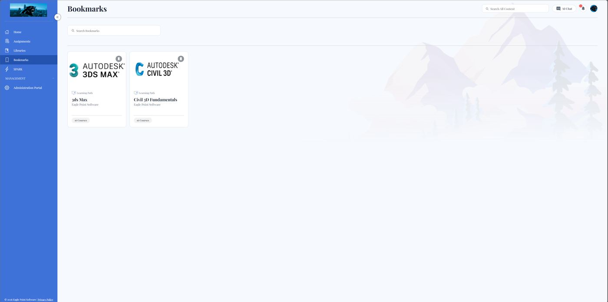
Bookmarks page — saved items in a card grid. Each card shows the bookmark icon (top-right), content type, title, publisher, and meta (e.g., "16 Courses" for a Learning Path).
Where
Home page → left nav → Bookmarks
The Bookmarks page lists every piece of content the user has bookmarked. Bookmarking is the user's way of saving a reference for quick access later.
Each piece of content has an "Add to Bookmarks" action available from its detail view or kebab menu.
Bookmarks persist across sessions and devices for that user.
AI Chat
Where
Home page → left nav → AI Chat (only when the tenant has AI Chat enabled in Admin Portal → Settings → General)
AI Chat is a context-aware chat feature that helps users find answers and content within Pinnacle Series using natural language. It's intended for in-the-moment troubleshooting, learning suggestions, and quick references — not for replacing structured learning paths.
How it works
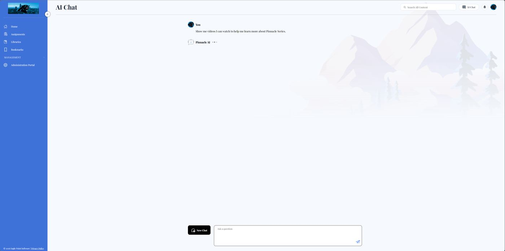
AI Chat panel — empty conversation state. Reached via the top-bar "AI Chat" button (not a left-nav item). The persona is named "Pinnacle AI". Bottom: New Chat button + Ask a question input.
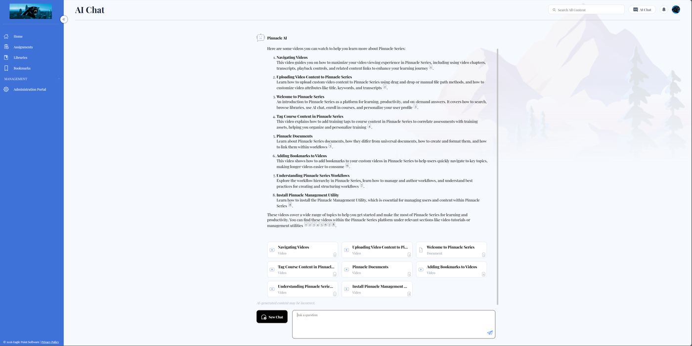
AI Chat reply with citations and content cards. Each numbered citation marker links to a specific Pinnacle Series content item; clickable cards at the bottom navigate directly to the source. Disclaimer: "AI-generated content may be incorrect."
Built on Microsoft Azure OpenAI Service, using the GPT-3.5 Turbo model.
Uses Retrieval-Augmented Generation (RAG) — answers are drawn from Pinnacle Series content the user has explicit access to.
The model is shared across all tenants, but content access is strictly isolated per tenant. AI Chat will never surface content from another customer's library.
Tips for users
Be specific with queries.
Add content-type words like "video," "guide," or "tutorial" to narrow what gets returned.
Use Boolean operators (AND, OR, NOT) for refinement.
Click "New Chat" to reset conversation context.
Data privacy
Aspect
How AI Chat handles it
What gets sent
Only user queries. AI Chat is not designed to handle sensitive personal or commercial information.
Data retention
Inputs and outputs are not retained.
Model training
Microsoft Azure OpenAI does not use customer data to train or improve the model. Customer inputs are isolated from Microsoft and OpenAI.
Compliance
CCPA, GDPR, SOC 2, SOC 3, CSA Star.
Required permissions for end users: None — once enabled at the tenant level, AI Chat is available to all users in the tenant. Required permissions to enable AI Chat for a tenant:Administrator (toggle is in Admin Portal → Settings → General).
SPARK
Where
Home page (left nav and body section) — only if the user is in a group with SPARK enabled.
SPARK is Pinnacle Series' personalized nano-learning feed. It curates short videos (under 5 minutes) from libraries the user can access, prioritizing content that matches the user's interests and group's focus areas.
How users experience SPARK
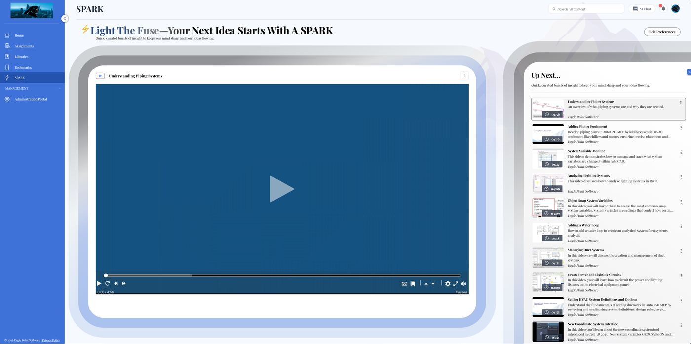
SPARK dedicated page — hero "Light The Fuse — Your Next Idea Starts With A SPARK". Center: video player with standard controls plus an inline bookmark icon. Right: "Up Next..." playlist (toggleable to a Transcripts view with auto-scrolling). Top-right: Edit Preferences button.
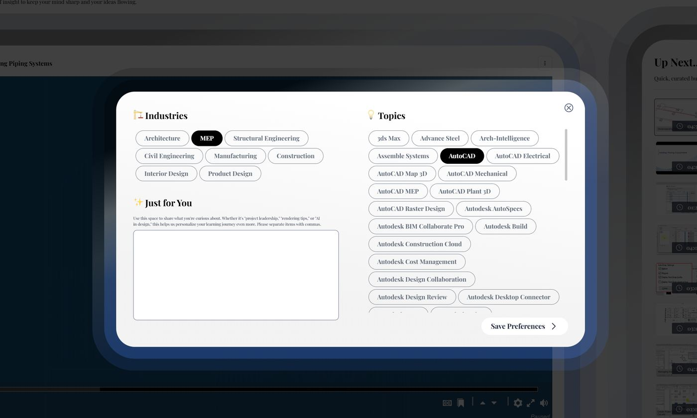
SPARK Edit Preferences modal — Industries (8 chips), Topics (full Pinnacle topic catalog as chips), and "Just for You" free-text field for personal interests.
First-time setup. On first sign-in after SPARK is enabled for their group, users see a welcome screen with optional preference capture: Industries (multi-select), Topics & Interests (software tools), and a free-text "Gist for you" field. Skippable.
Daily feed. Up to 25 videos in a session queue, each 3–5 minutes. The intent is "1–2 SPARKs a day."
Progress tracking. Completed videos get a green check; the queue refreshes as videos are completed.
Save & share. Bookmark a SPARK or share its link with a colleague.
How SPARK picks content
SPARK uses a weighted match across:
User preferences (highest priority — the user's "Just for You" settings)
Group interests (set by an admin at the group level)
Hero Products from shared libraries — fallback when no preferences are set: AutoCAD, AutoCAD Civil 3D, InfraWorks, Revit (Architecture / MEP / Structure), Bluebeam, Inventor, Navisworks, Autodesk Construction Cloud.
Match conditions:
Content has not been viewed by the user in the last 90 days.
Content is under 5 minutes.
The match phrase appears in Title, Description, Keywords, Topics, Chapters, or Transcript.
Configuring SPARK (admin side)
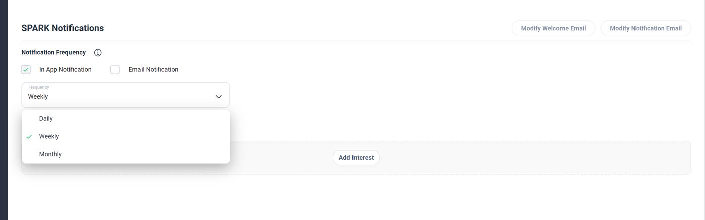
SPARK Notifications panel — independently toggleable In-App and Email channels, frequency dropdown (Daily / Weekly / Monthly), and customizable Welcome Email + Notification Email templates accessible via the buttons in the top-right.
Define interests: Admin Portal → Settings → Users → User Interests area → Add Interest.
Enable per group: Admin Portal → Groups → select group → Edit Group → SPARK toggle (top right) → Enable.
Set notification cadence: Daily / Weekly / Monthly. Weekly is the default recommendation for most teams.
Choose group interests: select from the User Interests catalog the topics most relevant to this group.
Best practice for group interests. Plan around workflows and deliverables, not departments or job titles. "Drainage Modeling" produces better SPARK matches than "Civil Team."
Required permissions:
Defining User Interests / enabling SPARK at the group level: Administrator (User Administration).
End users seeing SPARK: must be a member of a group where SPARK has been toggled on.
My Account / Profile & Settings
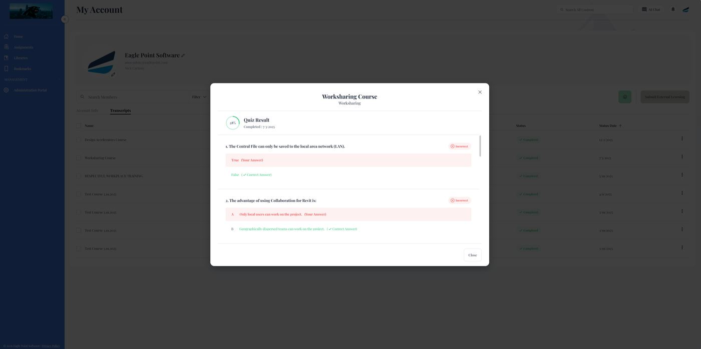
My Account → Transcripts tab — full learning history with kebab menu per row. The Quiz Result modal (open in this view) shows per-question detail, correct/incorrect marking, and the user's score. The "Submit External Learning" button (top-right) appears only when the tenant has the corresponding setting enabled.
Where
Top-right user avatar → Profile & Settings
Naming note: The menu item reads Profile & Settings, but the destination page header reads My Account. They are the same page.
The user avatar dropdown
Clicking the user avatar in the top-right of the end-user UI opens a small menu:
Profile & Settings — always shown. Opens the My Account page.
Submit External Learning — conditionally shown. Only appears when the tenant has "Allow Users to Submit External Learning" toggled on at Admin Portal → Settings → General. If the toggle is off, this menu item is absent for every end user in the tenant.
Switch Tenant — shown for users who have access to more than one tenant.
Sign Out — always shown.
Pattern note: Like AI Chat, "Submit External Learning" is gated at the tenant level — it's a configuration toggle, not a per-user permission. If end users at a tenant are reporting that they can't find a way to submit external learning, the first thing to check is the tenant setting in Admin Portal → Settings → General.
Tabs
Account Info (default tab)
Transcripts — the user's full learning transcript / completion history.
Editing your username
The user's Username is the editable display name shown in the Welcome heading on Home (`Welcome, [Username]`) and at the top of the My Account page. Click the pencil icon next to the username on the Account Info tab to open the Edit Username modal — a single text field plus Cancel / Save.
Note on the Welcome heading: the Home page heading reads Welcome, [Username] — always the Username, never a tenant name. The Username is freely editable by the end user, so it can look like a real name, a company name, or anything else.
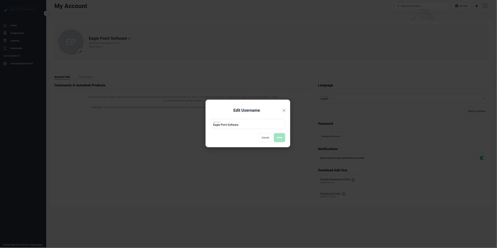
My Account → Account Info tab with the Edit Username modal open. Click the pencil icon next to the username at the top of the page to open this modal. The Username field is free text — the value shown here ("Eagle Point Software") is one user's chosen username; this is what the Welcome heading on Home displays.
Account Info sections
Commands in Autodesk Products — manage Related Learning Command preferences (which Autodesk products show Pinnacle suggestions in-app).
Language — set preferred language. Pinnacle supports 130+ languages with auto-translated asset titles, descriptions, and transcripts.
Password — Change Password (only available for users who sign in with a password — i.e., not SSO-only users).
Notifications — toggle email notifications. Note: an admin can also disable email notifications tenant-wide.
Download Add-Ons — links to download Pinnacle Management Utility and Pinnacle User Tools (MSI installers).
Activate on This Device
After installing Pinnacle User Tools, an "Activate on This Device" button appears in Account Info. Clicking it activates the plugin in the user's installed Autodesk products. Close any open Autodesk applications first.
Administration Portal Overview Admin Portal
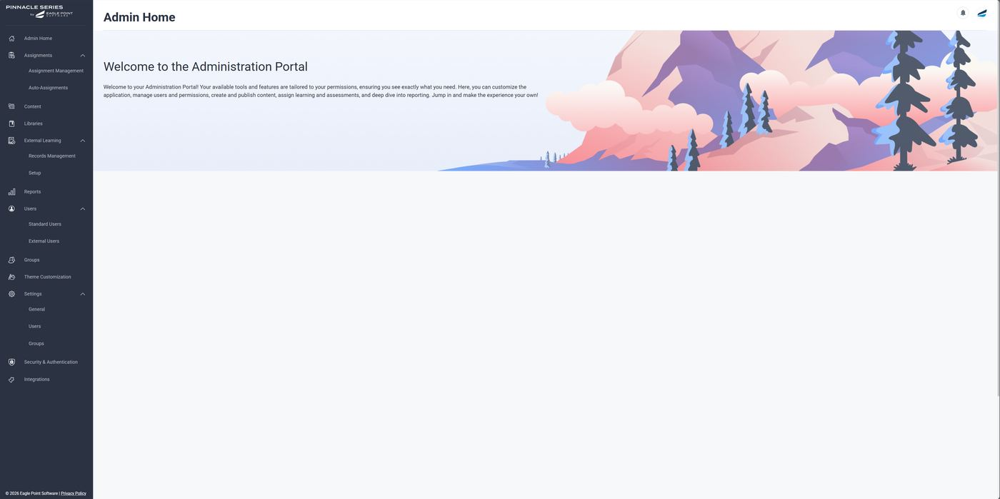
Administration Portal — Admin Home / Welcome view, with the full left nav expanded. Note: the visible nav items are filtered to the user's permissions; this admin has all permissions granted.
Where
Home page → left nav → MANAGEMENT section → Administration Portal
The Administration Portal is the admin-side UI for Pinnacle Series. It's where users with admin-tier permissions manage content, users, groups, libraries, settings, and reports.
Accessing the Admin Portal
From the Home page, the MANAGEMENT section appears in the left nav (only if the user has any admin-tier permission). Below the section header, the only item visible to most users is Administration Portal. Click it to enter the admin UI.
Classic UI legacy: Older training material may say "click the cogwheel icon in the top right." That's the Classic UI. In Peak Experience, the path is via the MANAGEMENT section in the left nav.
Admin Portal left navigation (full)
The Admin Portal left nav is a flat list of top-level items. When all admin permissions are granted, the order is:
External Learning ▸ (expandable: Records Management, Setup)
Reports
Users ▸ (expandable: Standard Users, External Users)
Groups
Theme Customization
Settings ▸ (expandable: General, Users, Groups) — does not contain Security & Authentication or Integrations
Security & Authentication — top-level (sibling of Settings, not a child)
Integrations — top-level
KnowledgeSmart Admin Area — top-level
Common mistake: Earlier docs and some test cases described Security & Authentication and Integrations as children of Settings. They are top-level items. Settings only contains General, Users, and Groups subpages.
Permission-filtered nav
The left nav only renders the items the user's permissions grant access to. Examples:
User's permission
What they see in the left nav
Assignment Administrator only
Admin Home, Assignments ▸, External Learning ▸
Content Administrator only
Admin Home, Content, Libraries
Administrator (User Administration) only
Admin Home, Users ▸, Groups, Settings ▸ (subset)
All admin permissions
Every item in the list above
Top bar
User avatar (top-right) → Switch Tenant, Sign Out.
Tenant name displayed near the top.
Admin Home
Where
Admin Portal → left nav → Admin Home
The default landing page when an admin enters the Administration Portal. Acts as a dashboard / launchpad for the admin's primary tasks.
Required permissions: Any admin-tier permission. The page itself is not gated separately — if you can enter the Admin Portal, you see Admin Home.
Assignments & Auto-Assignments Admin Portal
Where
Admin Portal → Assignments ▸ → Assignment Management or Auto-Assignments
Assignment Management
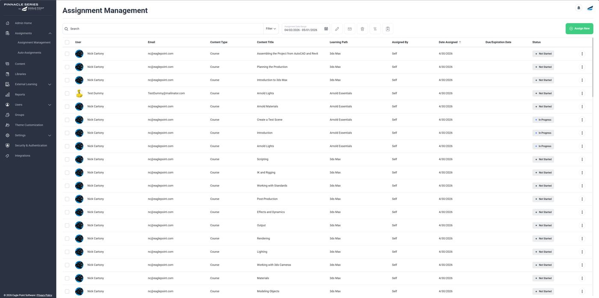
Assignment Management list view — toolbar with Search, Filter, built-in Assignment Date Range picker, and the green Assign New button (top-right). Table columns: User, Email, Content Type, Content Title, Learning Path, Assigned By, Date Assigned, Due/Expiration Date, Status.
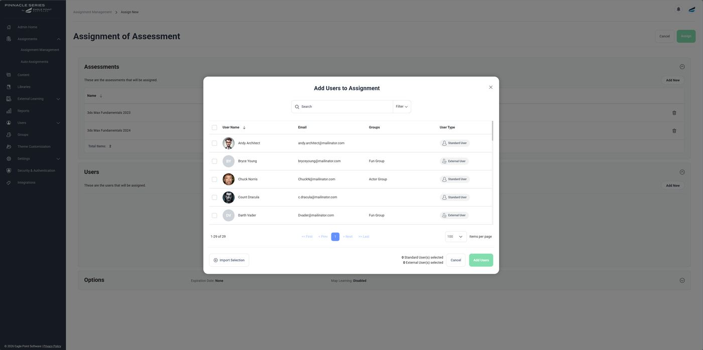
Assign New → Assessment sub-page with the "Add Users to Assignment" modal open. The modal differentiates Standard Users from External Users in the same picker, and tracks selected counts separately.
The Assignment Management page is where admins create, monitor, and manage all assigned learning and assessments.
Assign New flow
Click the green Assign New button (top-right of the Assignment Management page).
A menu appears — select Content or Assessment.
The Assign Content / Assign Assessment sub-page opens with a search-and-filter panel for picking what to assign and a user/group picker for who to assign to.
Set due date, training thresholds (if applicable), and exclusion rules, then click Assign.
Breadcrumb on sub-pages: Assignment Management > Assign New.
Common admin actions
Filter existing assignments by date range, content type, status.
Re-Enroll a user in an assignment.
Resend assignment notification email.
Set expiration dates for assessments.
Exclude users who already completed prior versions.
Auto-Assignments
Auto-Assignments are rules that automatically assign content or assessments based on conditions — typically group membership or assessment results.
Creating an auto-assignment
Click Create New Auto-Assignment.
Select the trigger type: Select Content or Select Assessment.
Pick the target group(s).
If assessment-driven: define training thresholds (e.g., users scoring <30% get full path; users scoring >80% are excluded).
Assignor — assign & track for users they manage or groups they own (scoped).
Content Admin Portal
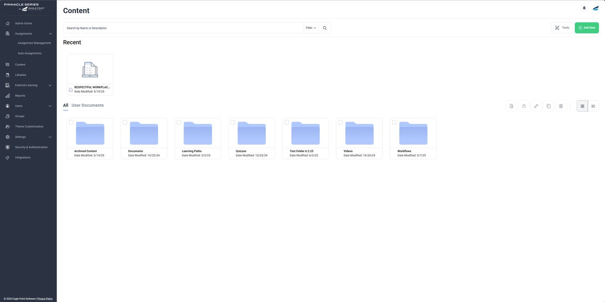
Admin Portal → Content — folder structure showing the standard content types (Documents, Learning Paths, Quizzes, Videos, Workflows, plus Archived Content). Toolbar includes Search, Filter, Tools dropdown (which contains Recycle Bin), and Add New.
Where
Admin Portal → Content
The Content area is where admins author, organize, publish, and manage all custom content. Pinnacle supports several content types, each with its own authoring page.
KnowledgeSmart Mapping — link content to KS assessment outcomes.
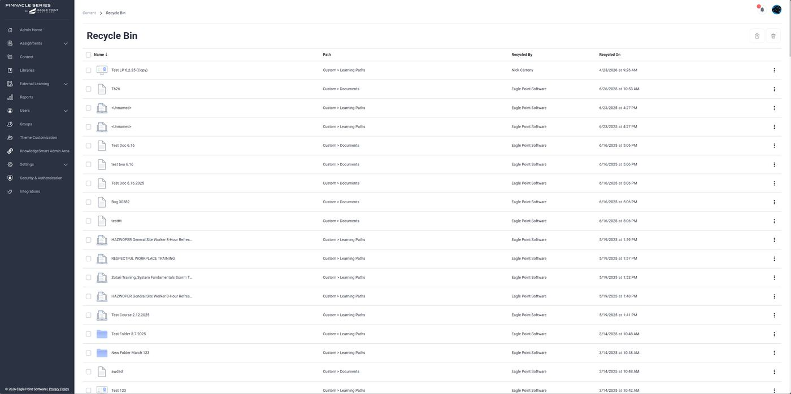
Admin Portal → Content → Tools (kebab) → Recycle Bin. Columns: Name, Path (where the item was deleted from), Recycled By, Recycled On. Top-right icons restore or permanently delete selected items. Per-item kebab offers Restore to Previous Location or Delete (permanent).
Recycle Bin path:Admin Portal → Content → Tools Menu (kebab) → Recycle Bin. It is not a left-nav item.
Folders
The Content area uses folders to organize content. Common per-folder actions: Create Copy, Share (Add Groups, Add Users), Topics association, Start Modifying (enters bulk-edit mode).
Required permissions (descending access):
Content Administrator — full access to all content and metadata, can create/manage libraries.
Content Publisher — author, publish, and manage content within libraries shared with them.
Admin Portal → Libraries — Subscription Libraries tab showing the catalog of Eagle Point-provided libraries. Tabs at top switch between the admin's custom libraries and subscription libraries; grid/list view toggle in the top-right.
Where
Admin Portal → Libraries
The Libraries page is where admins create, manage, and share libraries — the top-level containers that group content for visibility control.
Library types
Subscription Libraries — Eagle Point-provided. Visibility can be managed by a Content Administrator.
Custom Libraries — created by the customer. Listed under the admin's name (e.g., "Nick Cartony Libraries").
Featured Libraries — any library the admin flags as featured. Featured libraries appear in their own section above the regular Libraries section on the end-user Home page.
Common actions
Create Library — make a new custom library.
Delete — remove a custom library (Content Administrator only).
Topics — assign topics/subtopics to organize the library.
Share — grant access to specific users or groups.
Feature — flag a library as Featured for the tenant.
Content Publisher — limited: only views/manages libraries explicitly shared with them.
External Learning Admin Portal
Where
Admin Portal → External Learning ▸ → Records Management or Setup
External Learning is the area for tracking training a user completed outside Pinnacle Series — third-party courses, conferences, certifications — so it shows up in the user's record alongside in-platform learning.
Records Management
Where admins view, create, approve, and manage external learning records.
Create Record — manual entry: Training Title, Completed Date, Training Provider, Duration, Rating, Feedback, optional file upload.
Approve / Deny — for pending external learning requests submitted by users (Assignment Administrator scope).
Assignor — manage and approve only for their managed users / owned groups.
Reports (Peak Reporting) Admin Portal
Where
Admin Portal → Reports
Peak Reporting is a unified reporting suite launched in August 2025. It replaces the older Management Utility-based reporting for most use cases.
The five reporting pillars
Pillar
Answers questions about
User Management Reports
Engagement, login activity, adoption trends. Who is provisioned? Who is active in Pinnacle and KnowledgeSmart?
Usage Reports
Content access, search behavior, user interest. What are people doing? What resource types are most popular? What are users searching for?
Learning Reports
Course progression, completions, learning paths. How are learners progressing? How much time are users spending?
Assessment Reports
Competency, scores, time taken, gaps. What competencies and skill gaps do we have?
Content Reports
Inventory, content types, publishers, governance, library structure. What content do we own or need to govern?
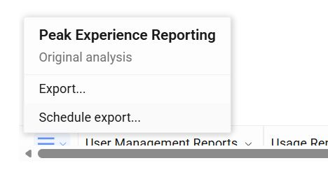
Per-report context menu — every Peak Reporting view exposes Original analysis (the default view), Export... (ad-hoc export), and Schedule export... (recurring/scheduled export).
Key features
Saved Views — admins can save filtered report configurations for reuse.
Scheduled Report Alerts — automatic email alerts when a report meets a defined threshold.
Targeted permissions — Reporting Administrator (sees all users) vs. Reporting Manager (sees only managed users).
Power BI export — Usage Reports support export for use in Power BI dashboards.
Reporting Manager — scoped to users the person manages or groups they own. Includes non-user-specific Content data.
Naming note: The "Reporting Administrator" permission was previously called "View Reports." Older training material may still use the old name. The "Reporting Manager" scoped role is new and didn't exist under the old naming.
Users Admin Portal
Where
Admin Portal → Users ▸ → Standard Users or External Users
The Users dropdown in the Admin Portal expands to two sub-pages: Standard Users (your organization's users) and External Users (vendors, contractors, project partners). Groups is a separate top-level item — not nested under Users.
Standard Users page
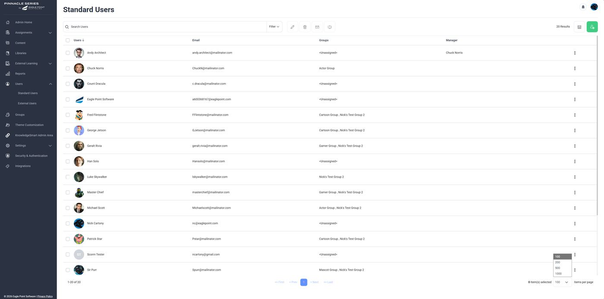
Admin Portal → Users → Standard Users — list view of all users in the tenant. Each row has a kebab for per-user actions (Edit, Delete, Send Sign-in Credentials, etc.).
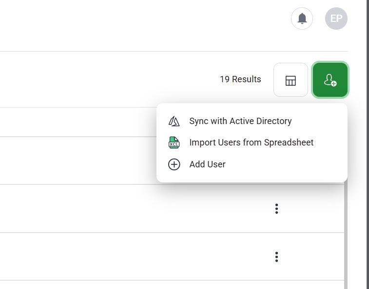
Add User menu — clicking the green Add User icon-button opens a menu with three options: Sync with Active Directory, Import Users from Spreadsheet, and Add User (manual).
Lists all users in the tenant. Filterable by domain, group, manager.
Adding users
Add User button → opens a menu with Manual and Import from Spreadsheet options.
Manual: enter Full Name (required), Email (required), then Add User.
Import from Spreadsheet: Browse Files (one file at a time) → Import Options (Add new / Update existing / Delete missing / Use first row as headers / Create groups if missing) → Map fields (Display Name and Email are required) → Preview Import → Process Import.
Bulk edit
Select users via checkboxes → Edit Users menu offers:
Exclude Users from SSO
Exclude Users from Active Directory Sync
Exclude Users from Synchronized Groups
Users Must Change Password at Next Sign-in
Per-user actions
View Full Profile — opens User Details page with Edit Profile button.
Edit User — modify user details, permissions, group membership.
Delete User — confirmation prompt, then soft-delete.
Send Sign-in Credentials — emails the user a sign-in link with a customizable message.
Permissions (set per user OR inherited from groups via the Inherit Permissions toggle)
Exclude from SSO toggle (under User Settings)
Product Expertise / Areas of Interest
External Users page
External Users is a separate user type for people outside your organization who need scoped access to your Pinnacle Series tenant — typically vendors, contractors, or project partners.
External Users have their own page (sub-item under Users dropdown).
Same person can be an External User in multiple organizations.
Their activity does show up in your internal reports.
External Users do not count against your standard user license.
Bulk-edit is supported for expiring or updating multiple at once.
User Details page
Reached via "View Full Profile" from the Users list. Single-user view with Edit Profile button. The Edit User Details flow opens to a page with sections including:
User Settings — includes the "Exclude User from SSO" toggle.
Permissions — per-user permissions or "Inherit Permissions" toggle.
Group membership.
Areas of Expertise / Interests (drives SPARK relevance).
Required permission to manage users:Administrator (under User Administration).
Groups Admin Portal
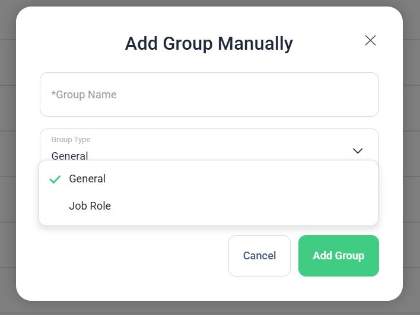
Add Group Manually modal — note the Group Type dropdown with two values: General (default) and Job Role. Pinnacle Series groups are typed at creation.
Where
Admin Portal → Groups (top-level — not nested under Users)
The Groups page lists all user groups in the tenant. Groups are the primary organizational unit for content sharing, permission inheritance, and SPARK enablement.
Common actions
Edit Group — opens Group Details page with Members, Owners & Partners, Parent & Child Groups, and SPARK toggle.
Delete Group — remove a group (members not deleted).
Export as CSV / Export as Excel — list export for offline review.
Filter Toggle Dropdown — filter the group list.
Group Details page
Members — users in this group.
Group Owners — users designated as owners (in future releases, owners will gain enhanced autonomy to assign content directly to their group).
Partners — additional managers without full owner rights.
Parent & Child Groups — group hierarchy. Permissions and content visibility can cascade if Inherit Permissions is enabled.
SPARK toggle (Features panel, top-right) — enable SPARK for this group; opens cadence and interest selection.
Group sync (Active Directory / Entra ID)
Groups can be synced from Microsoft Entra ID (Azure AD) or on-prem Active Directory. Configuration lives at Admin Portal → Integrations. Synced groups can be excluded per-user via the "Exclude from Synchronized Groups" bulk action.
Required permission:Administrator (under User Administration).
Theme Customization Admin Portal
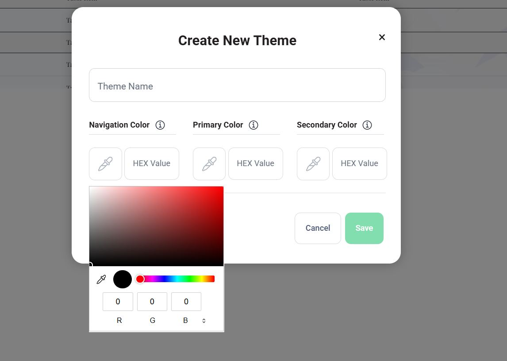
Create New Theme modal — Pinnacle supports multiple saved themes. Each theme has three independently-configurable color slots: Navigation Color, Primary Color, and Secondary Color, with eyedropper, HEX, or full RGB color picker.
Where
Admin Portal → Theme Customization
The Theme Customization page lets admins brand the Pinnacle Series UI for their tenant — logo, colors, layout.
What you can customize
Branding — upload a tenant logo and background image.
Where
Admin Portal → Settings ▸ → General, Users, or Groups
Reminder: Settings does not contain Security & Authentication or Integrations. Both are top-level items in the left nav.
Settings → General
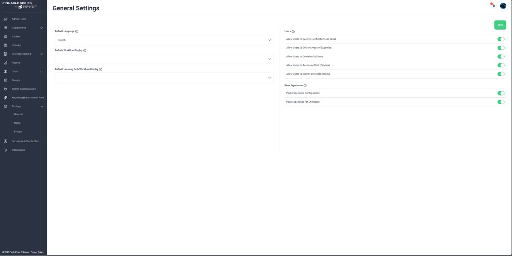
Settings → General — exact toggle names. Note "Allow Users to Access AI Chat (Preview)" includes the "(Preview)" qualifier; AI Chat is a preview feature. The Peak Experience block contains two independent toggles for the admin UI and the end-user experience.
Tenant-wide configuration, including:
Peak Experience Configuration toggle — enables the new Peak admin UI.
Peak Experience for End Users toggle — enables the new Peak end-user UI.
AI Chat enable / disable.
Allow Users to Submit External Learning — when enabled, end users see a "Submit External Learning" item in their user avatar dropdown. When off, that menu item is hidden for everyone in the tenant.
Email notification policies.
License management.
Settings → Users
User-attribute configuration:
User Attributes — define custom attributes (Attribute name, Data Type) that show up on every user record.
User Interests — manage the catalog of Interests selectable for SPARK group configuration. Add Interest opens a quick-add dialog.
Areas of Expertise — define the catalog of expertise areas users can be tagged with.
Required permission:Administrator (under User Administration). Some sub-pages may require additional permissions; consult the Permissions Reference for specifics.
Security & Authentication Admin Portal
Where
Admin Portal → Security & Authentication (top-level — sibling of Settings)
Security & Authentication is where all tenant-level authentication and password policy is configured. It's split into two sections.
Even after tenant-level SSO is configured, individual users can be excluded from SSO via the per-user toggle: Admin Portal → Users → Edit User Details → User Settings → "Exclude User from SSO."
Required permission:Administrator (under User Administration).
Integrations Admin Portal
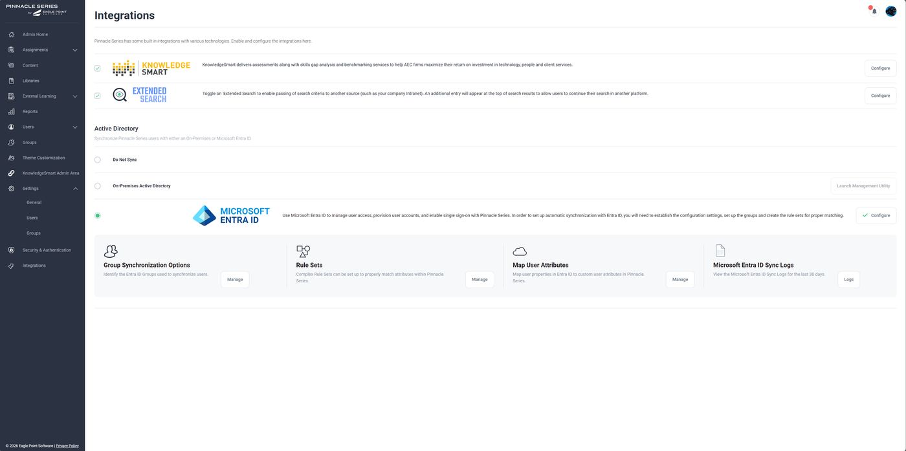
Admin Portal → Integrations — top section toggles KnowledgeSmart and Extended Search; bottom section configures Active Directory sync via three mutually-exclusive options: Do Not Sync, On-Premises Active Directory (via Management Utility), or Microsoft Entra ID. When Entra ID is selected, four sub-configurations appear: Group Synchronization Options, Rule Sets, Map User Attributes, and Sync Logs (30-day window).
Where
Admin Portal → Integrations (top-level)
The Integrations page is where admins configure third-party connections.
Supported integrations
Microsoft Entra ID (Azure AD) Sync — Client Identifier, Client Secret, Directory Identifier, Email Attribute to Synchronize, Display Name Attribute to Synchronize. Read-only integration with built-in safeguards.
KnowledgeSmart — connect the tenant to its KnowledgeSmart account for skill assessment integration.
On-premises Active Directory — covered by a separate PDF guide.
Management Utility launcher — Launch Management Utility button for legacy admin tasks not yet in Peak.
Common actions
Configure — open the integration's setup form.
Save credentials.
Request — submit a request for a new integration (Email of Requester).
Required permission:Administrator for most integrations. The KnowledgeSmart integration also requires a separate KnowledgeSmart Administrator role configured in the KS Admin Dashboard.
KnowledgeSmart Admin Area Admin Portal
Where
Admin Portal → KnowledgeSmart Admin Area (top-level)
The KnowledgeSmart Admin Area is the embedded administrative interface for managing skill assessments through KnowledgeSmart, Eagle Point's assessment product. KnowledgeSmart and Pinnacle Series are integrated but have separate admin roles.
Common tasks
Map KnowledgeSmart assessment outcomes to learning content via Learning Tags.
Synchronize KnowledgeSmart users with Pinnacle Series users.
Manage KnowledgeSmart invitations and assessment campaigns.
Required role:KnowledgeSmart Administrator — this is a separate role configured in the KnowledgeSmart Admin Dashboard, not in Pinnacle Series itself. A user can have full Pinnacle admin permissions and still see "You do not have permission to log in to KnowledgeSmart" in this section if their KS admin role hasn't been set up.
SCORM Export Admin PortalNew feature
Where
Admin Portal → Content / Learning Paths → Export as SCORM (on eligible learning paths or courses)
SCORM Export lets a customer package selected Pinnacle Series learning content into SCORM files for upload to their own LMS (Cornerstone, Workday Learning, a corporate LMS, etc.). Learners launch the activity from inside that external LMS, but their progress, completions, and scores are reported back to Pinnacle Series.
This is new functionality. Detailed UI flow and test coverage are still being developed. Behavior captured here may evolve. Check Pinnacle_UI_Facts.md §6a for the most current capture.
What can be exported
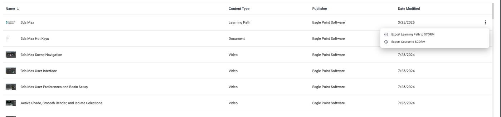
SCORM Export per-item kebab on a Learning Path — two options: "Export Learning Path to SCORM" (entire LP) or "Export Course to SCORM" (opens the Select Course to Export modal).
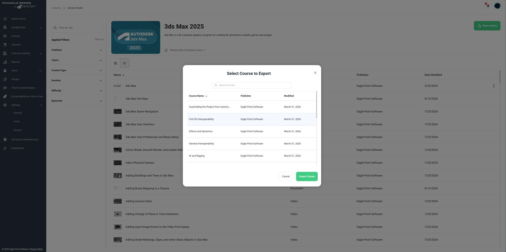
"Select Course to Export" modal — opened from the per-item kebab. Each course in the LP is row-selectable; the green Export Course button finalizes the export.
Learning Paths — only a limited subset of learning paths is eligible for SCORM export. Not every learning path will have the option.
Courses within a learning path — when exporting, the admin can choose to export the entire learning path OR specific course(s) from within it.
How it works for the learner
An admin exports an eligible learning path (or selected courses) as a SCORM package from Pinnacle Series.
The customer uploads the SCORM package into their own LMS.
A learner launches the SCORM activity from inside that LMS — they do not sign in to Pinnacle Series directly.
The learner consumes the content. Progress and completion are reported back to Pinnacle Series via the SCORM package's link to the issuing tenant.
Prerequisites for the learner to consume the content
All four conditions must be true at the moment the learner launches the SCORM activity, not just at export time:
The learner has an active Pinnacle Series account in the same tenant the SCORM package was exported from.
The learner's email in the external LMS matches their email in Pinnacle Series — email is the identity correlation key.
The learner's Pinnacle Series permissions and content visibility still allow access to the underlying content (libraries shared with their group, content not deleted, etc.).
The tenant's Pinnacle Series subscription is active.
What blocks access
If any of the conditions above fails, the SCORM activity will not launch successfully or will not report progress back. Common blocking conditions:
Pinnacle Series subscription has expired.
The learner does not have a Pinnacle Series account in the tenant the package was exported from. (E.g., a vendor or external partner who is not in the tenant cannot consume the package.)
The learner's email in the external LMS does not match their email in Pinnacle Series.
The underlying content is no longer accessible to the learner in Pinnacle Series — library not shared with their group, content unpublished, or content deleted.
What CSM / Support should ask first when learners report broken SCORM activities:
Is the learner's email the same in both the external LMS and Pinnacle Series?
Is the learner still active in Pinnacle Series in the tenant the package was exported from?
Does the learner still have access to that specific content in Pinnacle Series (library sharing intact, content still published)?
Is the tenant's subscription still active?
Common Sales question: "Can a vendor or external partner who isn't in our Pinnacle tenant consume our SCORM package?" Answer: No. The package is bound to the issuing tenant. Each learner consuming the SCORM package must have an active account in that same tenant.
Required permission to export SCORM: Likely Content Administrator or Content Publisher, but this has not been visually confirmed yet. Will be updated as test cases are authored.
Permissions Reference
The authoritative list of Pinnacle Series user permissions. Permissions can be set per-user or inherited from group membership via the Inherit Permissions toggle on the user record.
Where to manage
Admin Portal → Users → Edit User Details → Permissions section (right side)
Inherit Permissions
When enabled, the user inherits permissions included in the user group(s) they belong to. When disabled, only per-user permissions apply.
Assignments and External Learning
Permission
What it grants
Assignment Administrator
Full access to Assignments and External Learning. Approve/deny external learning for all users. Manage assignments and assessment assignments for any user or group.
Assignor
Access to Assignments and External Learning, but scoped to:
Users they are the manager of
Users in groups they own (or child groups, if Inherit Permissions enabled)
Assessment assignments for interviewees
Content Management
Permission
What it grants
Content Administrator
Full visibility and rights to all content and metadata. Can:
Create and manage all content types (Workflows, Documents, External Docs, Quizzes, Videos, Live Events, Learning Paths, Courses)
Create and manage all metadata (Topics, Subtopics, Keywords, Learning Tags, Related Learning Commands)
Assign all metadata to custom content
Create, modify, delete libraries and share with groups/users
Manage Subscription Library visibility
Customize Content Templates
Delete content at any scale; restore from Recycle Bin
View Content Suggestions
Customize Company Certificate
Modify transcripts
Content Publisher
Author, publish, and manage content. Visibility/rights granted by a Content Administrator. Can:
Create and manage Custom Content (all types except Live Events visibility
Delete content at any scale within libraries shared with them; restore from Recycle Bin
Cannot create, edit, or delete libraries; cannot share libraries with groups/users
Assign metadata to Custom Content
Publish content to libraries
View Content Suggestions and Content Changes
Modify transcripts
Content Author
Author and manage content; narrower than Publisher. Can:
Create and manage Custom Content while not published
View libraries they're shared into (no library create/delete/share)
Delete content at draft
Create folders, move unpublished content
Assign metadata to unpublished content
Modify transcripts on videos that aren't published
User Administration
Permission
What it grants
Administrator
Top-level user management. Can:
Add and manage users (manual or via Active Directory / Entra ID sync)
Administrator is the top-level user-management permission
Out of scope for Peak: The legacy Work Group Management permissions (Administer Work Groups / Create Work Groups / Invite External Users into Work Groups) are Classic-only. They appear in older permissions documentation but apply only to tenants on Classic.
Permission rename history:
View Reports → Reporting Administrator (rename in current Pinnacle UI).
User Administration - Administrator → Administrator (shortened label).
Reporting Manager is a new permission introduced with Peak Reporting; it didn't exist under the old naming.
Older training material, the Role-Based Permissions Guide PDF, and some legacy test cases use the pre-rename labels. The list above is current.
Common Questions
What permissions does someone need to add users to Pinnacle Series?
Administrator (under User Administration). This grants the ability to add users manually, import them via spreadsheet, sync them from Entra ID / Active Directory, and assign them to groups. See Users and Permissions Reference.
What permissions are needed to publish content?
Content Administrator (full) or Content Publisher (limited to libraries shared with the publisher). A Content Author can create content but cannot publish it independently.
What permissions are needed to view reports?
Reporting Administrator for all users, or Reporting Manager for users the person manages or groups they own. (Older docs may call this "View Reports" — that name has been renamed.)
How do I get to the Recycle Bin?
Admin Portal → Content → Tools Menu (kebab icon on the toolbar) → Recycle Bin. It is not a left-nav item.
Where do I configure SSO?
Admin Portal → Security & Authentication (top-level item, not under Settings). Then scroll to the Single Sign-On Authentication section.
Why doesn't a user see SPARK?
SPARK is enabled per group. If the user's group does not have SPARK toggled on, they won't see SPARK in the left nav or on the Home page. Check Admin Portal → Groups → select the group → Edit Group → SPARK toggle. Also note: if no relevant libraries are shared with the group, the SPARK feed may appear empty.
Why does an Admin Portal user see fewer nav items than expected?
The Admin Portal left nav is permission-filtered. Each user only sees the sections their permissions grant access to. If a user has only Content Administrator, they'll see Admin Home, Content, and Libraries — and nothing else. Granting additional permissions (e.g., Administrator for Users, Assignment Administrator for Assignments) expands what they see.
Why is "Naviate" spelled that way?
Naviate is the name of a specific customer (a Symetri subsidiary) for whom Eagle Point built a custom SSO integration. It is not a typo of "Navigate." See Sign In & Authentication for the Naviate auth flow.
What's the difference between Peak and Classic?
Peak Experience is the modern UI; Classic is the legacy UI. Tenants migrate at their own pace. Peak is enabled by two independent tenant toggles: Peak Experience Configuration (admin UI) and Peak Experience for End Users (Home page). See Peak vs Classic.
Does AI Chat use customer data to train the model?
No. Microsoft Azure OpenAI does not use customer data to train or improve the model. Inputs and outputs are not retained. AI Chat uses RAG to pull from content the user has explicit access to. See AI Chat.
Where do users download Pinnacle User Tools?
Top-right user avatar → Profile & Settings → Account Info tab → Download Add-Ons section. The page lists both Pinnacle Management Utility and Pinnacle User Tools. Visibility of these download links is controlled by the Administrator permission on the tenant.
Pinnacle Eagle · Wiki Assistant
Ask me about anything in this wiki — I'll find the right section.